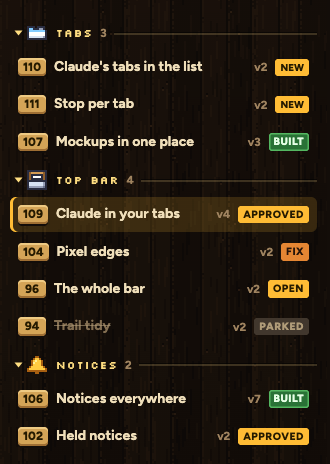
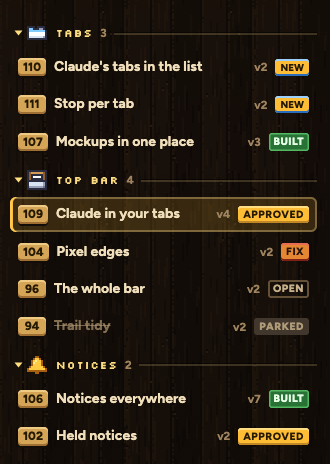
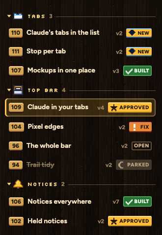

Today OPEN and APPROVED are the exact same gold chip, and NEW is gold too. Each mark gets its own colour: NEW blue, OPEN just an outline (nothing decided yet), APPROVED gold, BUILT green, FIX red, PARKED stone. The row you have open loses its gold strip.
Gold, gold, gold.

Every mark its own colour.

My pick. The same colours, plus a little pixel sign like a game status icon: gem new, star approved, tick built, ! fix, moon parked. Tells them apart by shape too.
